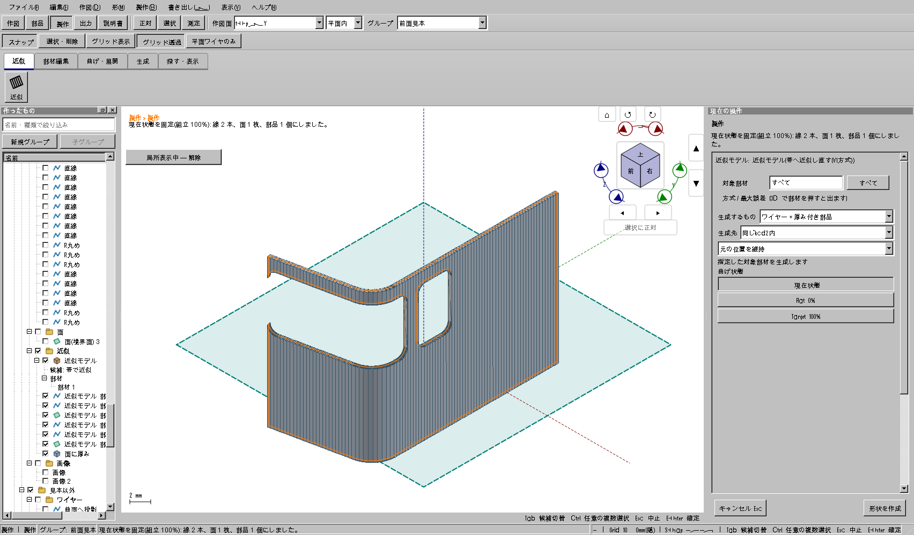

2026-10-28。対象は元の曲面の実外周・穴を失って近似できない問題と、その結果からの展開・固定生成。旧モデル、他担当の模型、元ファイルは保全する。
| 工程 | 従来の問題 | 変更後 |
|---|---|---|
| 入力面を読む | 矩形UVの評価では穴や凹外周を表せず、平面境界APIも曲面を拒否する。 | 支持曲面と実材料のUV領域を分離し、外周・閉じた穴・端の切り欠きを搬送する。 |
| 1枚に近似 | 境界のUV比を距離比とみなすと窓がずれる。ごく小さなねじれの細片もできる。 | 実3D境界を帯へ対応付け、必要なら残りの近似誤差予算内で母線方向を共通にする。調整量も最大偏差へ加算する。 |
| 展開と中間姿勢 | 材料の無い帯や複数の分離片を、矩形や部材番号と取り違える。 | 空帯・支持帯・実部材を区別し、同じ材料境界を0・35・100%へ等長写像する。 |
| 線・面・厚みを生成 | 矩形支持面へ戻って窓が埋まる。細かな接合では汎用オフセットが閉殻を作れない。 | 実境界のB-Repを保持。折れた帯と平面群のオフセット交線を使い、閉鎖性・体積・自己交差を従来どおり検査する。 |
| 表示と再確認 | 表示用メッシュ追加で安全検査キャッシュが失われる。展開した姿勢が表示範囲から外れる。 | 正本幾何をキャッシュで照合し、表示三角形だけをキーから外す。現在姿勢のレールも全体表示に含める。 |
| 保存 | 支持矩形を再構築すると開口が失われ得る。 | 既存の凍結B-Rep保存形式を使って実材料を再構築する。新しい保存スキーマは追加しない。 |
| 場所 | 役割 |
|---|---|
src/next/kachakacha/fabrication/BandMaterialRegion.* | Qt/OCCT非依存の領域切り分け、境界写像、同一直線の冗長区間の整理。 |
src/next/kachakacha/app/FabricationEvaluate.* | 元面ごとの近似、実部材と支持帯の対応、偏差と等長展開。 |
src/next_occt/kachakacha/kernel/OcctFabricationRegion.* | 元B-Repの支持曲面と外周・穴を読み、3DとUVの標本誤差を検査。 |
OcctSurfaceRegion.*、OcctFoldedBandThicken.cpp、OcctPlanarSheetThicken.* | 実境界の面生成と厚み。最後の出力検査は省略しない。 |
src/apps/cad_next/V2FabricationMaterial.* | 表示と固定生成の共通境界、生成面の既存保存形式への格納。主窓の新しい状態フィールドは追加しない。 |
docs/manual/curved-window-approximation.htmlとimages/v2-material-*.png | 実アプリ画面による操作手順。 |
out/curved-material-20261028/ | 添付モデルの確認用コピー、生成したKCD2、ログ、画像、試験結果。原本は上書きしない。 |
削除したファイルは0。旧版・バックアップ・作業ツリー・増分ビルド資産は削除していない。今回の途中失敗ログも残し、成功結果で失敗を消していない。元の面とワイヤーは引き続き設計入力として必要であり、勝手に削除していない。
バックアップの確認用コピーにある元ワイヤーから、パノラミック窓の切り欠きと隣の閉じた側窓を含む面を作成。1枚の近似、展開、固定面、厚み0.5 mmの1部品、保存後の再読込まで検査した。最大標本偏差0.0160272 mm、境界対応標本RMS 0.00439123 mm。目標0.1 mmは変更していない。

| 試験 | 確認 |
|---|---|
| コア・ネイティブ | 11コア例と23ネイティブ例を含む2 CTest。非線形UV、複数穴、凹外周、空帯、分離片、円筒弧長、無効な穴、切り欠きだけの面、戻り曲げ、ねじれた平面群、厚み3方向、予算不足時の原形保持。 |
| 実Qtの2形状 | 6窓／切り欠き＋2窓。取消、確定、Undo/Redo、実際の組立率、0%平面性、表示範囲、型紙、生成、保存後の穴と体積。 |
| 添付モデル | 元の外周を広げず1枚を生成。再読込後の部品へ光線を当て、パノラミック開口と側窓が空で、周囲の材料があることも検査。 |
実Qt入力と文書・選択APIを組み合わせた自動操作であり、OSマウスによる全操作の網羅試験ではない。読取専用担当は限定した差分の数値・方向・境界処理をレビューし、主担当が根拠と実行結果を確認した。連続曲面全域の数学的誤差上限や材料弾性を保証するものではなく、偏差は標本評価。実際の印刷・3Dプリント・組付けは未実施。
各元フェイスで1枚にする機能で、複数フェイス全体の1枚への結合ではない。元の穴付き面へ別役割の開口を追加する場合は先に元面へ適用する。同じ支持帯から分かれた複数部材の個別曲げや、厚みで接合できない形は理由付きで拒否する。
添付モデルの一連の重点操作は約2分、追加2形状の重点操作は合計約68秒（撮影、保存・再読込を含む）。開発途中の失敗は条件や検査が異なるため、これらから高速化率や全作業30分達成を算出しない。並列の担当時間をユーザーの待ち時間へ足し合わせない。